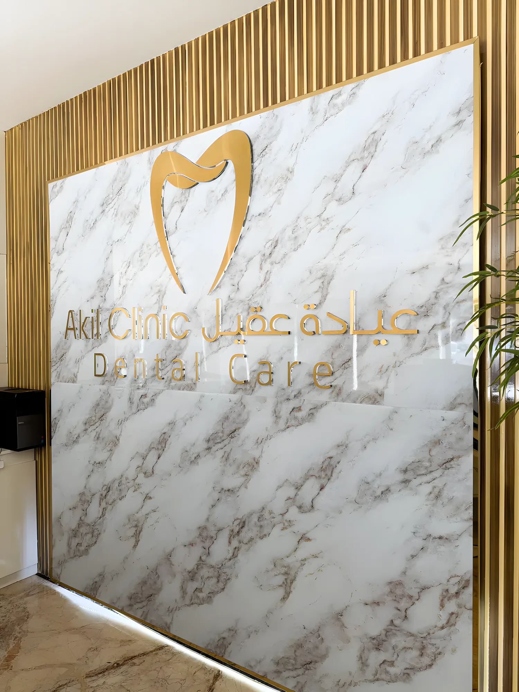

نتعرف عليكما
يأخذ الطبيب والفريق وقتهم للتعرف عليك وعلى طفلك. إذا كان عندك أي قلق، أخبرنا قبل الفحص.
Akil Clinicلطب الأسنان · شارع خليفة، العين
عيادة أسنان للعائلة في قلب مدينة العين. نعالج الكبار والصغار: الفحص الدوري والحشوات، زراعة الأسنان، التقويم، وتجميل الأسنان.

على هذه الفكرة قامت عيادة عقيل: عيادة صغيرة وراقية في العين، تعمل بمعايير عالمية، ويشعر فيها المراجع وكأنه في بيته.
كل غرفة علاج مجهزة بأحدث الأجهزة من أفضل الشركات العالمية. ونختار دائماً العلاج الأقل تدخلاً، الذي يحافظ على أكبر قدر ممكن من السن الطبيعي.

جدار الاستقبال
رعاية أسنان لكل العائلة، من أول فحص للطفل إلى زراعة الأسنان. اضغط على أي علاج لتعرف تفاصيله.
محتار أي علاج تحتاج؟ اتصل على 03 755 5060 واحجز استشارة.

دكتوراه في جراحة الأسنان (DDS). اختصاصي زراعة أسنان معتمد، وعضو الأكاديمية الأمريكية لزراعة الأسنان (AAID). طب الأسنان العام والتجميلي والزراعة.
عمل قبل ذلك عضو هيئة تدريس في كلية طب الأسنان بجامعة عجمان للعلوم والتكنولوجيا لأكثر من خمس سنوات، وأشرف على أكثر من ٣٠٠ طالب طب أسنان.
أحضر طفلك عند ظهور أول سن، وقبل أن يتم سنته الأولى. هذا ما يحدث في الزيارة.
يأخذ الطبيب والفريق وقتهم للتعرف عليك وعلى طفلك. إذا كان عندك أي قلق، أخبرنا قبل الفحص.
نعرّف طفلك على الكرسي والأدوات بطريقة ممتعة، حتى لا يفاجئه شيء.
فحص دقيق، وأشعة عند الحاجة، وتنظيف وفلورايد. بعدها يجلس الطبيب معك ويشرح لك ما وجده.
الحشوات والعلاجات الأكبر نؤجلها لزيارة لاحقة بعد أن يتعود طفلك على العيادة. وإن كان عنده ألم، نبدأ العلاج من أول زيارة إذا سمح الوقت.
نختم بجولة في العيادة. يعود طفلك إلى البيت بملصقات وهدية وفرشاة أسنان وخيط، وتستلم أنت ملخصاً عن صحة أسنانه.
اسحب لتتصفح الصور. هذا ما ستراه عند دخولك العيادة في شارع خليفة.


لأي سؤال آخر اتصل على 03 755 5060 أو راسلنا على info@akilclinic.com.
جلسة واحدة من ٤٥ إلى ٦٠ دقيقة وتعود إلى بيتك في نفس اليوم. نفحص أسنانك ولثتك أولاً لنتأكد أن التبييض مناسب لك.
ليس كما كان في السابق. مع التخدير الحديث، أغلب المراجعين لا يشعرون بأي انزعاج تقريباً أثناء العلاج. وأغلب الأسنان تحتاج بعده إلى تاج.
مع العناية الجيدة، مدة طويلة جداً: ٥٠ إلى ٨٠ بالمئة من التيجان تدوم من ١٥ إلى ٢٠ سنة.
عند ظهور أول سن، وقبل أن يتم سنته الأولى.
اتصل على 03 755 5060 أو راسلنا على info@akilclinic.com. دوامنا من السبت إلى الخميس، من ٩ صباحاً إلى ٩ مساءً.
شارع خليفة 18736، العين
في قلب مدينة العين، على شارع خليفة. ابحث عن لوحة عيادة عقيل الرمادية.
| السبت | ٩ص – ٩م |
| الأحد | ٩ص – ٩م |
| الاثنين | ٩ص – ٩م |
| الثلاثاء | ٩ص – ٩م |
| الأربعاء | ٩ص – ٩م |
| الخميس | ٩ص – ٩م |
| الجمعة | مغلق |
فاكس 03 755 3009 · info@akilclinic.com